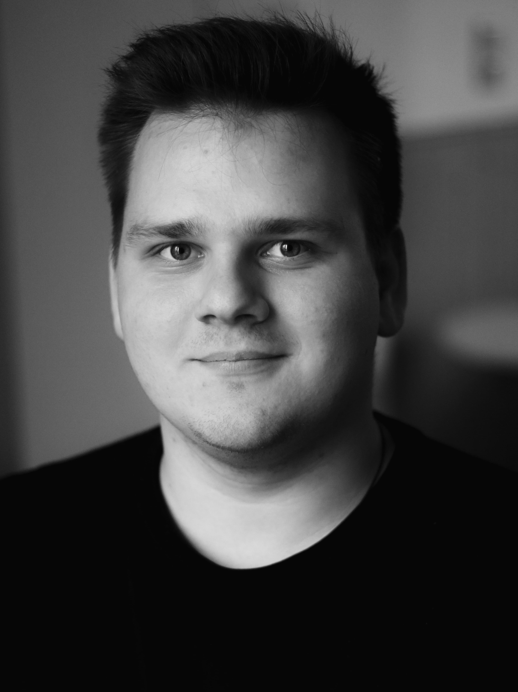

93059 Regensburg

Служіння
Проповідь та дослідження Біблії
Щонеділі та впродовж тижня ми відкриваємо Писання, щоб пізнавати Бога глибше й будувати життя на Його Слові.
Відчуй Бога особисто
Українська церква у Регенсбурзі, місце де кожен пізнає Бога особисто, знаходить підтримку в еміграційних викликах та змінює світ на краще.
93059 Regensburg
Поклоніння, молитва та спілкування
Служити Йому в Регенсбурзі та людям у Баварії
Підтримка, молитва та духовний дім


Вітаємо
Щонеділі о 15:00
Адреса: Kieslgasse 8, Regensburg
Приходь та прийми участь у:
Життя церкви
У громаді вже живуть різні напрями служіння, через які ми поклоняємося, зростаємо в Біблії, підтримуємо одне одного й відкриваємо простір для дітей, молоді, сімей та нових людей.
Щонеділі та впродовж тижня ми відкриваємо Писання, щоб пізнавати Бога глибше й будувати життя на Його Слові.

Час заступництва, поклоніння і спільної молитви за церкву, дітей, місто та Україну.

Простір, де діти знайомляться з Богом, дружать і ростуть у безпечній та турботливій атмосфері.

Місце для молоді, де є спілкування, поклоніння, питання про віру та життя з Богом.

Команда музикантів і вокалістів допомагає церкві разом входити в поклоніння та віддавати славу Богу.

Невеликі зустрічі в домах, де є щирі розмови, молитва, підтримка та спільний шлях віри.

Теплі зустрічі для молитви, підтримки, натхнення і духовного зростання жінок різного віку.

Простір для братерства, чесних розмов, відповідальності та зміцнення чоловіків у вірі.


Ritmus
Онлайн в Google Meeting
Домашній формат у Регенсбурзі
Онлайн. Вірш за віршом. Дискусія.
Поклоніння кожного 4 четверга місяця
Духовні та життєві розмови за чашкою чая у Wiesent
Місія
MEINE KIRCHE / UA — християнська церква для українців Регенсбургу. Місце, де кожен пізнає Бога особисто, знаходить підтримку в еміграційних викликах та зростає разом з іншими.
Ми прагнемо обʼєднувати людей навколо Ісуса Христа і давати надію переселенцям, хто шукає відповіді на складні питання в нових життєвих умовах.
Ми мріємо про громаду, яка єднає різні покоління, незалежно від віку, статі, мови та нації.
Дивлячись у майбутнє, ми хочемо стати громадою, яка несе Євангеліє німецькому народу та відкриває нові церкви.
Рік заснування
Частина церкви MEINE KIRCHE REGENSBURG
Частина Союзу п’ятидесятницьких церков Німеччини
Мови богослужіння: українська, російська, німецька з перекладом.
Одна місія — Євангеліє для Регенсбурга
Активних служителів і лідерів
Vision
Ми прагнемо створювати простір, де люди зустрічаються з Богом не формально, а реально: у поклонінні, молитві, Слові та щоденному житті.

Ми хочемо бути церквою, яка помічає людей навколо, відкриває двері для нових знайомств і несе Євангеліє тим, хто шукає надію та напрямок.
Ми будуємо громаду, в якій різні покоління можуть духовно зростати поруч, підтримувати одне одного та вчитися жити у вірі щодня.
Ми віримо, що церква покликана впливати на місто через любов, служіння, молитву та практичну допомогу, щоб разом змінювати життя людей навколо.
Служити разом
Знайомся з людьми, відкривай свої дари та долучайся до служіння, яке будує церкву, підтримує українців у Німеччині та несе надію далі.
Доєднатись до команди →Команда
Лідерка дитячого та молодіжного служіння
Група прославлення, ударні

Спеціаліст зі звуку, світла та техніки
Молодіжне та медіа-служіння
Команда підтримки та комунікації
Молитва та прославлення
Вперше у нас?
Якщо ти шукаєш церкву, підтримку або просто хочеш познайомитися, приходь на богослужіння щонеділі. Тут тебе зустрінуть відкрито й допоможуть зорієнтуватися.
Це духовний дім для українців у Регенсбурзі, де кожен може пізнавати Бога особисто, знаходити підтримку та рости разом із громадою.
У матеріалах архіву церква представлена як християнська протестантська громада для українців у Німеччині.
Просто приходь у неділю на Kieslgasse 8 або напиши в Telegram чи на email, якщо хочеш, щоб тебе зустріли або підказали маршрут.